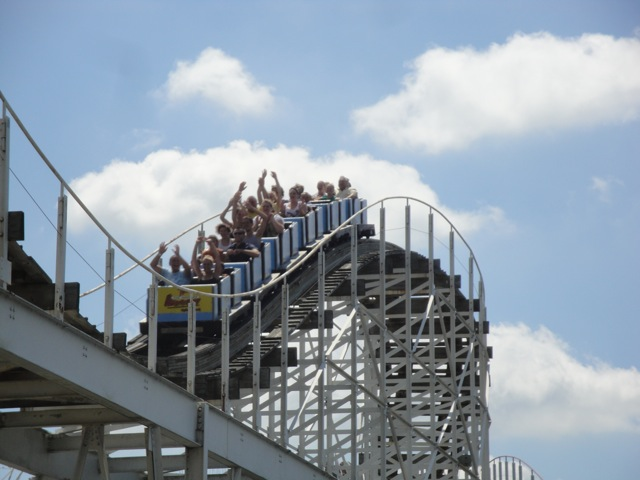
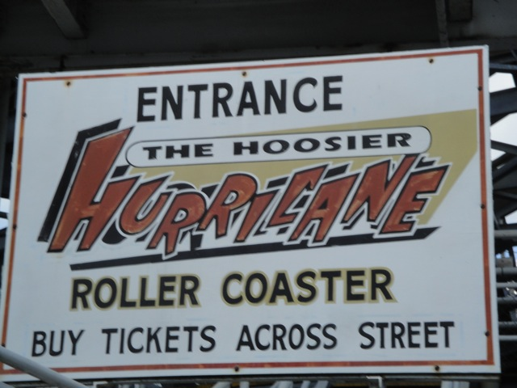

| |
Hoosier Hurricane Review

Today, we'll be heading over to Indiana Beach where we'll be reviewing Hoosier Hurricane. The bigger of the parks (normal) wooden coasters. But while it may be bigger, it's not the best. Anyways, the buzz bar comes down, you buckle the seatbelt, and we're off. We roll around a small turn before heading straight up the lifthill. From the lifthill, we get a great view of Indiana Beach and all of Lake Shafer. We finally reach the top of the lifthill, and roll around an S Curve at the top of the hill. Just rolling along up in the sky, waiting to drop. And then, we see it. The first drop. We lean down, and start to fall, we gain a lot of speed as we bottom out with the wind blowing in our faces. It's really quite enjoyable. We then go across a double up, however, there's not much airtime. I mean, there's a small little pop of floater air at the top, but trust me. It's nothing to scream and go gaga over. We then drop back down to the lake, going right under the suspension bridge. So be sure to wave hello to the people walking on the bridge. We then rise up and go through a big sweeping turn that gives us a fantastic view of Lake Shafer. We then roll through a slight turn and some straight track. Not that exciting, but whatever. We then go down a small drop before rising up into an airtime hill, which wouldn't you guess, has absolutely no airtime on it at all. And the next airtime hill, yep. No airtime. And after that, we rise up, go through a tiny little dip before doing a small drop completely in the rides structure. But wouldn't you know it, thats the end of the ride. We just meander to the station after this. So yeah. While Hoosier Hurricane may be bigger than Cornball Express, it's not nearly as fun or exciting as the ride is pretty forceless. Though on the bright side, I still like it. It goes fairly fast and has some speed, and that combined with the wind from Lake Shafer blowing on you and enjoying the Indiana Beach atmosphere make this actually a really fun cruiser. It's a really good coaster that you can relax on. So while not that exciting or forceful, I'd still give it a ride if the lines not too long. You just might get a ride in with a nice breeze.
7/10
Location: Indiana Beach
Opened: 1994
Built by: Custom Coasters
Credit #200
Last Ridden: August 12, 2010
Hoosier Hurricane Photos





Home
|